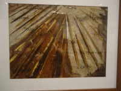
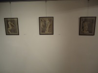
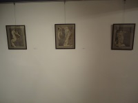

Έργα Εικαστικές Διαδρομές
|
Είναι η τέχνη μια διαδρομή; Ένα συναπάντημα με άλλους, ή με τον ίδιο σου τον εαυτό; Ίσως είναι ένα ταξίδι μέσα από το οποίο η κάθε είδους γραφή αποτυπώνει την σύλληψη μιας ιδέας. Ενός οράματος. Ενός σκοπού. Λέξεις που δεν μπορούν να αρθρωθούν, διατυπώνονται πιο εύκολα πάνω σε ένα κομμάτι χαρτί ή ένα καμβά. Δεν έχει σημασία το υλικό πολλές φορές. Φτάνει να μπορεί να αποτυπώσει τις διαδρομές που ο καθένας θα δει μέσα από τα δικά του μάτια. Αυτή η διαδρομή είναι μια σύγκλιση πολιτισμών. Ένα παράθυρο ανοιχτό στον κόσμο που πιστοποιεί απλά και απερίφραστα πως η τέχνη δεν γνωρίζει σύνορα. Η τέχνη είναι το μέσο για το συναπάντημα και ο δρόμος που οδηγεί στην σύγκλιση ή στην απόκλιση. Μια συνάντηση που καθιστά τον κάθε δρομέα δεχτικό σε προκλήσεις και μηνύματα. |
 |


 
